DRINK
CAKE
STORE CAPITAL
ABOUT WUN-YI
CONTACT US
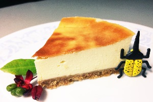
黃金法式重乳酪蛋糕‧‧‧‧‧‧‧‧‧‧‧‧‧‧‧‧‧‧‧‧‧‧‧‧‧NT$260
介紹 :
綿密細緻的輕乳酪蛋糕，入口即化，香嫩滑順，看似甜食，入口後卻僅微甜，名為乳酪，入口後卻又不膩口，強調低糖、低油脂、低熱量的健康樂活蛋糕。
食材 :
消化餅 、無鹽奶油、奶油乳酪、Cream Cheese 、細砂糖 、蛋、檸檬。
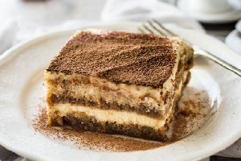
葡式香醇濃提拉米蘇‧‧‧‧‧‧‧‧‧‧‧‧‧‧‧‧‧‧‧‧‧‧‧‧‧NT$190
介紹 :
帶有酒香、咖啡香的提拉米蘇起司蛋糕，很適合情人節享用。
食材 :
Mascarpone、Cream Cheese、打發鮮奶油、黑咖啡、香草精、黑咖啡、卡魯哇酒、消化餅乾、無鹽奶油、手指餅乾、可可粉適量、打發鮮奶油。
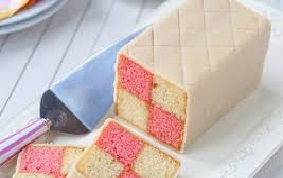
夏日微風八藤堡蛋糕‧‧‧‧‧‧‧‧‧‧‧‧‧‧‧‧‧‧‧‧‧‧‧‧‧NT$230
介紹 :
聽起來有點德風的巴騰堡格紋蛋糕，源於德國紀念當初嫁到德國的維多利亞公主與巴騰堡的路易斯王子的大婚，
食材 :
黃油、白糖、雞蛋、低筋麵粉、全脂牛奶、粉色食用色素、杏醬、杏仁糊、杏仁粉、細砂糖、雞蛋、檸檬汁。
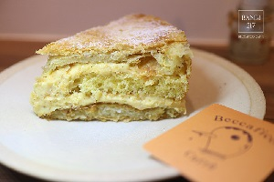
甜甜初戀千層派蛋糕‧‧‧‧‧‧‧‧‧‧‧‧‧‧‧‧‧‧‧‧‧‧‧‧‧NT$220
介紹 :
芝麻千層內餡為芝麻奶油，清香又餘韻留長的芝麻香，是芝麻千層的一大特點，喜歡芝麻口味的朋友千萬不要錯過！
食材 :
芝麻、蛋、糖、鹽、牛奶、奶油、中筋麵粉、鮮奶油夾餡、糖粉、動物性鮮奶油。
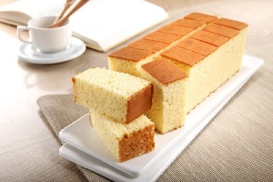
經典西德式卡斯提拉‧‧‧‧‧‧‧‧‧‧‧‧‧‧‧‧‧‧‧‧‧‧‧‧‧NT$280
介紹 :
長崎卡斯提拉最早由葡萄牙的傳教士帶到日本長崎，當時稱為「來自卡斯蒂利亞王國的蛋糕（po deCastela）」，由於口味甚佳，廣受好評，長崎人因而模仿製作，並逐漸成為長崎的特色土產。
食材 :
牛奶、雞蛋、奶油、蛋糕麵粉。
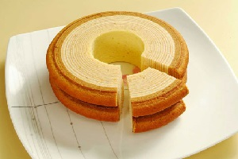
斷腸人天涯年輪蛋糕‧‧‧‧‧‧‧‧‧‧‧‧‧‧‧‧‧‧‧‧‧‧‧‧‧NT$230
介紹 :
年輪蛋糕被稱為「Baumkuchen」，這是德文的複合字，其中「Baum」是指木頭，而「Kuchen」則是糕點，層層的紋理和樹椿般的外型，富有「德國蛋糕之王」的美譽。
食材 :
雞蛋、砂糖、低筋麵粉、發泡粉、食用油、牛奶、水果。
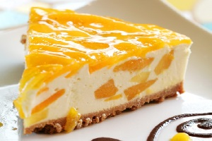
消暑必備鮮芒果蛋糕‧‧‧‧‧‧‧‧‧‧‧‧‧‧‧‧‧‧‧‧‧‧‧‧‧NT$200
介紹 :
蛋糕主體採用香草戚風蛋糕，入口不乾且不油膩，選用總統牌動物性鮮奶油，以純牛奶提煉，味道香醇好吸收，且無反式脂肪的疑慮。
食材 :
雞蛋、低筋麵粉、色拉油、牛奶、細砂糖A、玉米澱粉、鮮奶油、淡奶油、細砂糖B、芒果。
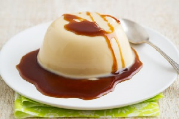
英式下午茶咖啡奶凍‧‧‧‧‧‧‧‧‧‧‧‧‧‧‧‧‧‧‧‧‧‧‧‧‧NT$150
介紹 :
炎熱的夏天,在外忙碌了一整天～如果能在回家後馬上沖個冰涼的冷水澡並吃上一碗香濃的摩卡咖啡凍,那該會是多麼舒服的享受！
食材 :
摩卡咖啡、吉利丁粉、糖、熱水、冷水
<
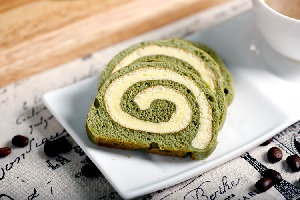
日式濃醇香抹茶奶捲‧‧‧‧‧‧‧‧‧‧‧‧‧‧‧‧‧‧‧‧‧‧‧‧‧NT$160
介紹 :
平安京茶事「抹茶蛋糕卷」用的是擁有三百多年製茶歷史「丸久小山園」抹茶粉。冷藏保存，三日內要吃完。從冰箱拿出來，先靜置數分鐘，稍微回溫後風味尤佳。
食材 :
高筋麵粉、低筋麵粉、泡打粉、抹茶粉 、牛奶、沙拉油、蛋黃 、蛋、細砂糖、蛋白、塔塔粉、法式布丁餡、栗子 20公克紅豆粒。
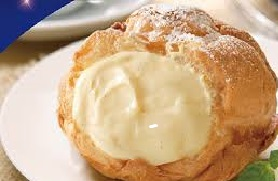
初夏奶油冰淇淋泡芙‧‧‧‧‧‧‧‧‧‧‧‧‧‧‧‧‧‧‧‧‧‧‧‧‧NT$130
介紹 :
甜蜜的點心~泡芙 夾上自己喜歡的內餡， 是無人能抗拒的甜點炸彈、無懈可擊的午茶點心， 也能為正式餐點畫上完美的句點。
食材 :
低筋麵粉、無鹽奶油、牛奶、白糖、鹽、雞蛋。
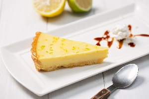
果香撲鼻英式檸檬塔‧‧‧‧‧‧‧‧‧‧‧‧‧‧‧‧‧‧‧‧‧‧‧‧‧NT$140
介紹 :
這是改良版的檸檬塔,少油少糖就算嘴饞多吃一塊也沒負擔,炎熱夏天裡冰冰涼涼加上酸酸的口感令人回味無窮~
食材 :
消化餅乾、無鹽奶油、檸檬餡、檸檬汁、糖、全蛋、吉利丁。
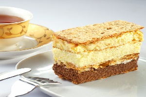
勇闖歐洲葡式拿破崙‧‧‧‧‧‧‧‧‧‧‧‧‧‧‧‧‧‧‧‧‧‧‧‧‧NT$250
介紹 :
拿破崙這個矬子可不簡單，法國甚至歐洲的歷史、資本主義法治基礎、軍事理論都從他這兒開始，但在吃貨眼裡，他對人類最大的貢獻，確是拿破崙蛋糕。
食材 :
蛋糕，吉士酱，牛奶 ，面粉
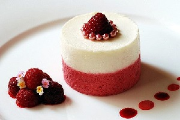
甜美回憶大草莓慕斯‧‧‧‧‧‧‧‧‧‧‧‧‧‧‧‧‧‧‧‧‧‧‧‧‧NT$160
介紹 :
經典的卡士達甜塔加上滿滿的新鮮草莓，賣相佳且味道也不錯，今年的母親節不妨動手做一個草莓塔，獻給親愛的媽咪。
食材 :
草莓、細砂糖、吉士丁粉、檸檬汁、鮮奶油、牛奶。
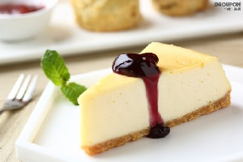
蔚藍海藍莓起司蛋糕‧‧‧‧‧‧‧‧‧‧‧‧‧‧‧‧‧‧‧‧‧‧‧‧‧NT$200
介紹 :
一種是重乳酪，另一種是輕乳酪。重乳酪蛋糕通常不加麵粉，不打發蛋白，以餅乾為基底，口感紮實。
食材 :
奶油乳酪、奶油、低筋麵粉、無糖可可粉、牛奶、蛋黃、蛋白、砂糖、藍莓、起司。